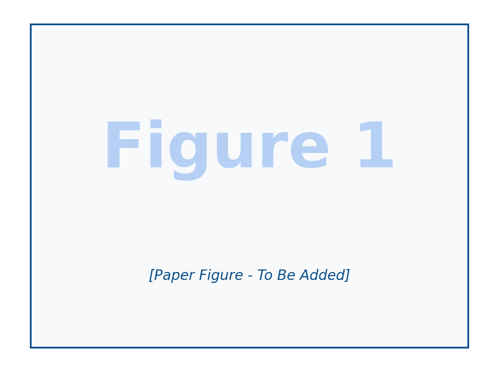

Sensor Agnostic Domain Generalization Framework
A novel framework that leverages geospatial foundation models for semantic segmentation across different sensors through synergistic pseudo-labeling and generative learning. Addresses annotation scarcity and sensor variability challenges in remote sensing.